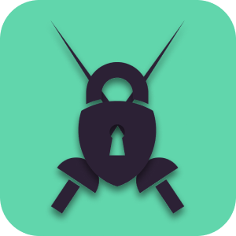

I am Debrunbaix!
I work as a security engineer at Cloud Temple
I study Cyber-Security in SupDeVinci School in Paris
I've been passionate about cybersecurity for several years now. On a daily basis, I use Ubuntu, Python, and ZSH as my primary tools and environment. My work involves a lot of automation, and for fun, I like to tinker with my Raspberry Pi and delve into reverse engineering.